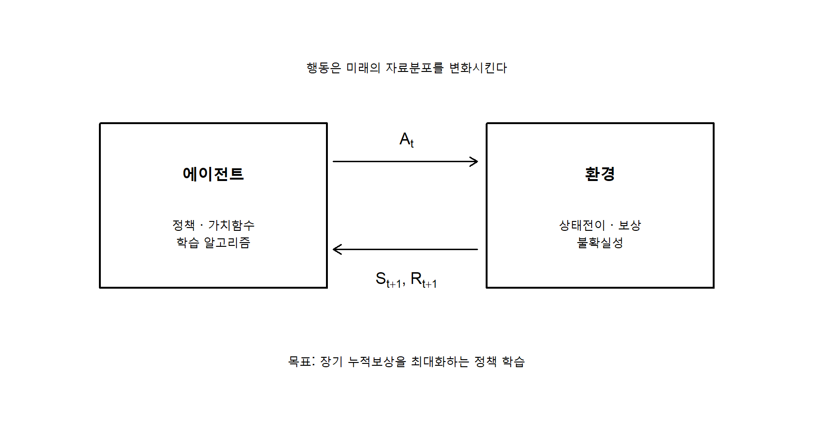
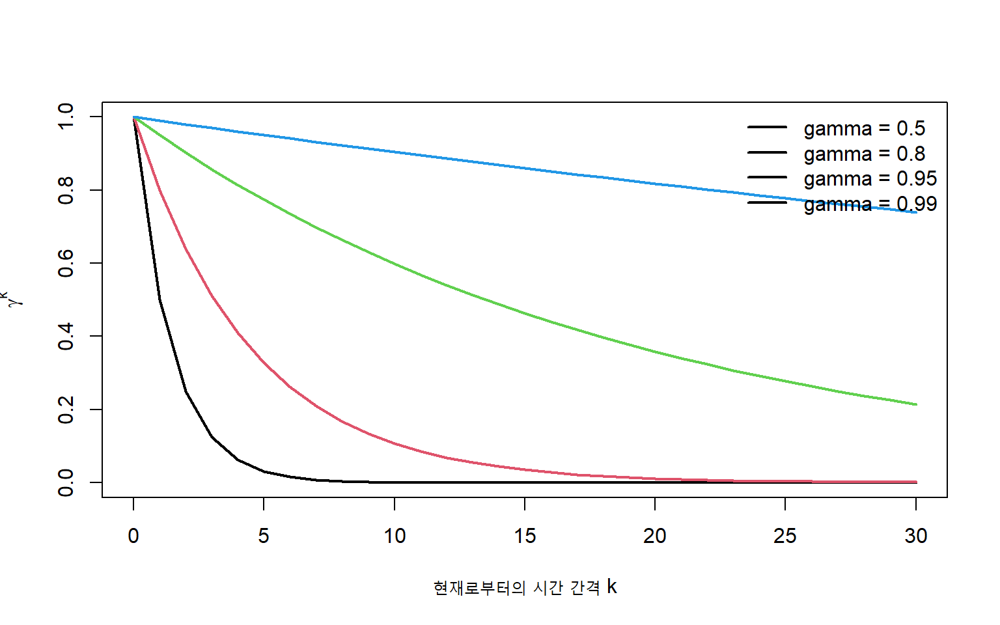
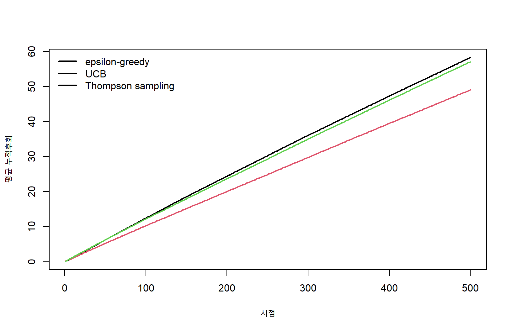
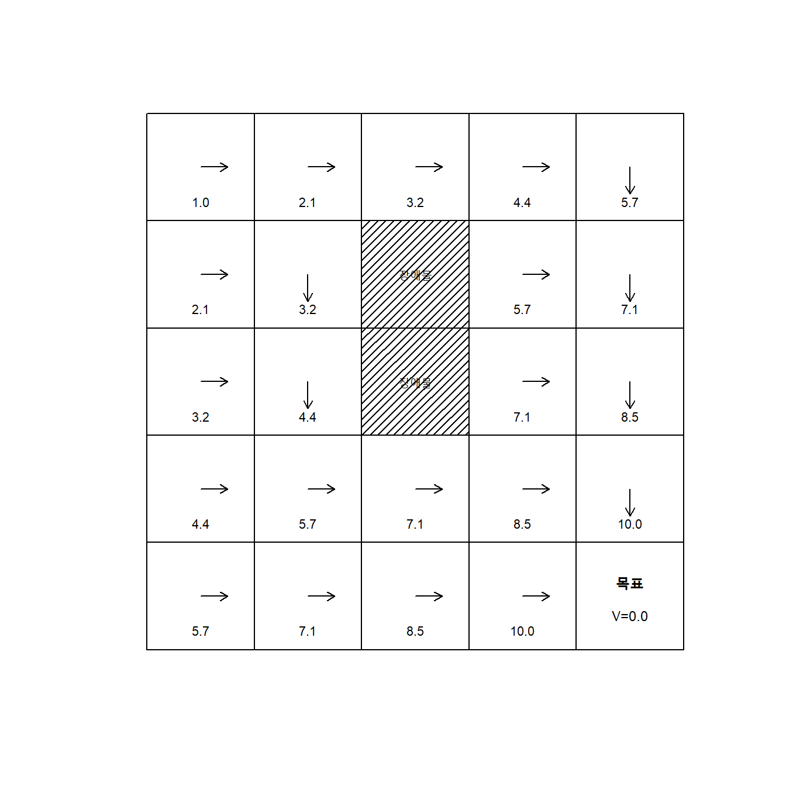
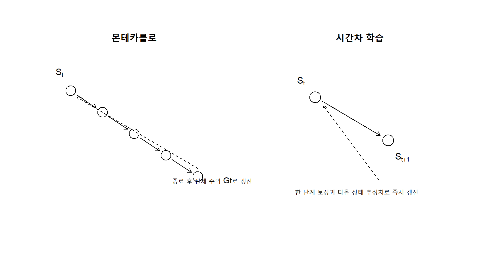
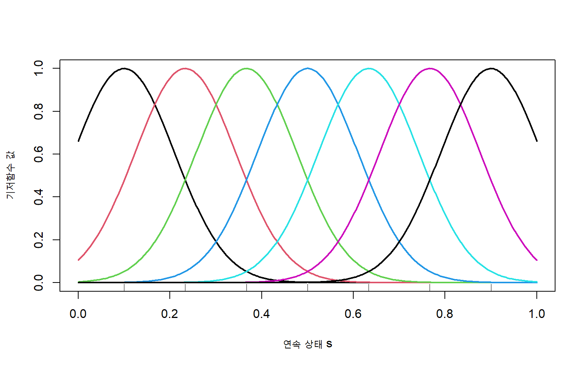
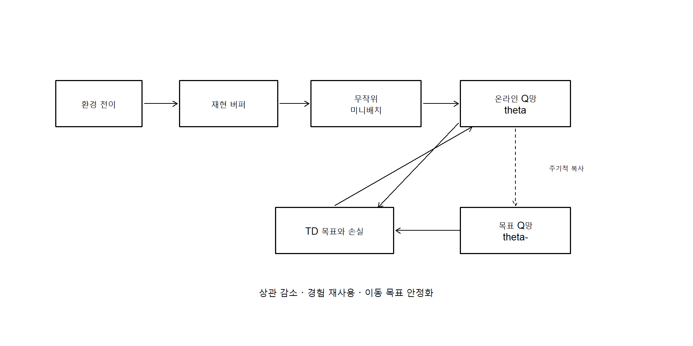
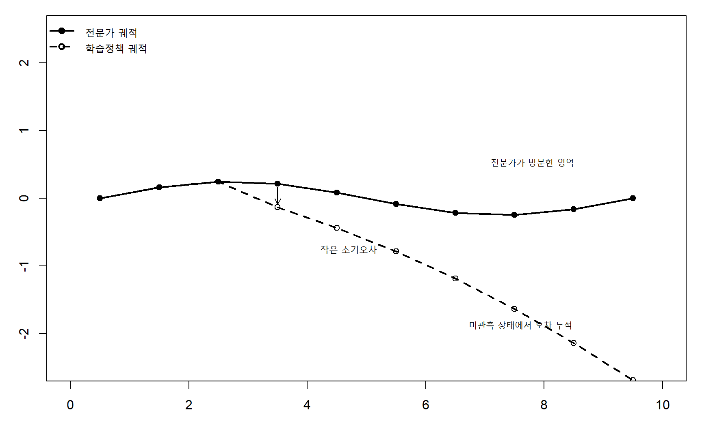
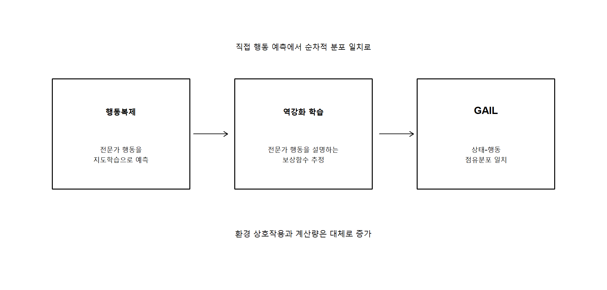

16 강화 학습
지도학습은 입력과 정답의 쌍으로부터 예측규칙을 학습하고, 비지도학습은 명시적인 정답 없이 자료의 구조를 탐색한다. 그러나 많은 실제 문제에서는 학습자가 단순히 주어진 자료를 분석하는 데 그치지 않고 환경에 행동을 가하며, 그 행동의 결과로 얻는 보상을 이용하여 이후의 선택을 개선해야 한다. 로봇의 이동, 임상치료 전략, 재고관리, 광고배치, 추천시스템과 게임 플레이는 모두 현재의 행동이 미래의 상태와 보상에 영향을 주는 순차적 의사결정 문제이다.
강화 학습(reinforcement learning)은 에이전트(agent)가 환경(environment)과 반복적으로 상호작용하면서 장기 누적보상을 최대화하는 정책(policy)을 학습하는 방법이다. 시점 \(t\)에서 에이전트는 상태 \(S_t\)를 관찰하고 행동 \(A_t\)를 선택한다. 환경은 보상 \(R_{t+1}\)과 다음 상태 \(S_{t+1}\)을 반환한다.
\[ S_t \xrightarrow{\ A_t\ } (R_{t+1},S_{t+1}). \tag{16.1}\]
강화 학습의 어려움은 정답 행동이 직접 주어지지 않는다는 데 있다. 에이전트는 행동의 결과로 받은 보상만을 이용해 어떤 선택이 좋은지 추론해야 한다. 또한 즉각적인 보상이 큰 행동이 장기적으로도 최선이라는 보장은 없다. 현재의 행동은 미래에 도달할 수 있는 상태를 변화시키므로, 강화 학습은 시간적으로 지연된 결과에 대한 책임 할당, 탐색과 활용의 절충, 관측되지 않은 환경동역학의 학습, 분포가 계속 변하는 자료에서의 안정적 최적화를 동시에 다룬다.
그림 16.1에서 강화 학습 자료는 고정된 표본이 아니다. 현재 정책이 선택한 행동이 다음 상태와 이후에 수집되는 자료를 결정한다. 따라서 예측모형의 오차를 줄이는 것만으로는 충분하지 않으며, 행동이 미래에 미치는 영향을 평가해야 한다.
이 장에서는 먼저 강화 학습 과업을 마르코프 의사결정과정으로 정식화하고 보상, 수익, 정책과 가치함수를 정의한다. 이어 즉각적인 의사결정을 다루는 \(k\)-무장 밴딧, 환경모형을 이용하는 모델 기반 학습, 모형 없이 경험으로부터 학습하는 모델 프리 방법, 고차원 문제를 위한 가치함수 근사와 심층 강화 학습, 전문가 행동으로부터 정책을 학습하는 모방학습을 설명한다.
16.1 과업과 보상
16.1.1 에이전트, 환경과 시간
강화 학습의 기본 단위는 에이전트와 환경의 상호작용이다. 이산시간 \(t=0,1,2,\ldots\)에서 에이전트는 상태공간 \(\mathcal S\)의 상태 \(S_t\)를 관찰하고, 행동공간 \(\mathcal A(S_t)\)에서 행동 \(A_t\)를 선택한다. 환경은 다음 상태와 스칼라 보상을 생성한다.
\[ S_t\in\mathcal S, \qquad A_t\in\mathcal A(S_t), \qquad R_{t+1}\in\mathbb R. \tag{16.2}\]
상태는 미래 의사결정에 필요한 정보를 요약한다. 예를 들어 임상치료 문제에서 상태는 현재 질병 중증도, 검사결과, 이전 치료와 부작용을 포함할 수 있다. 행동은 투약 여부나 용량이며, 보상은 건강상태의 개선, 비용과 부작용을 결합한 효용으로 정의할 수 있다.
강화 학습 문제는 흔히 에피소드형(episodic)과 계속형(continuing)으로 구분한다.
- 에피소드형 과업은 시작상태와 종료상태가 있다. 게임 한 판, 환자의 입원기간, 로봇이 목표지점에 도달하는 과정이 예이다.
- 계속형 과업은 자연스러운 종료점 없이 지속된다. 전력망 제어, 온라인 추천, 공정제어가 예이다.
에피소드 \(i\)의 궤적(trajectory)은 다음과 같다.
\[ \tau_i = (S_0,A_0,R_1,S_1,A_1,R_2,\ldots,S_{T_i}). \tag{16.3}\]
지도학습의 관측값과 달리 궤적 안의 상태와 행동은 일반적으로 서로 독립이 아니다. 또한 궤적의 분포는 자료를 생성한 정책에 의존한다.
16.1.2 마르코프 의사결정과정
강화 학습의 대표적인 수학적 모형은 마르코프 의사결정과정(Markov decision process, MDP)이다. 유한 MDP는 보통 다음의 튜플로 정의한다.
\[ \mathcal M = (\mathcal S,\mathcal A,P,r,\gamma). \tag{16.4}\]
여기서
- \(\mathcal S\)는 상태공간,
- \(\mathcal A\)는 행동공간,
- \(P(s'\mid s,a)\)는 상태전이확률,
- \(r(s,a)\) 또는 \(r(s,a,s')\)는 기대보상,
- \(\gamma\in[0,1]\)는 할인율이다.
마르코프 성질은 현재 상태와 행동이 주어졌을 때 다음 상태와 보상의 분포가 과거 전체와 독립임을 뜻한다.
\[ \Pr(S_{t+1}=s',R_{t+1}=r \mid S_0,A_0,\ldots,S_t=s,A_t=a) = \Pr(S_{t+1}=s',R_{t+1}=r\mid S_t=s,A_t=a). \tag{16.5}\]
상태전이와 보상을 함께 나타내면
\[ p(s',r\mid s,a) = \Pr(S_{t+1}=s',R_{t+1}=r\mid S_t=s,A_t=a) \tag{16.6}\]
이고, 상태전이확률과 기대보상은 각각
\[ P(s'\mid s,a) = \sum_r p(s',r\mid s,a), \tag{16.7}\]
\[ r(s,a) = E(R_{t+1}\mid S_t=s,A_t=a) \tag{16.8}\]
로 정의한다.
마르코프 성질은 현실의 모든 과정이 기억이 없다는 의미가 아니다. 상태를 적절히 정의하여 미래 예측에 필요한 과거 정보를 충분히 포함한다는 모형화 가정이다. 현재 관측만으로 충분하지 않으면 과거 관측의 요약, 순환신경망의 은닉상태 또는 믿음상태(belief state)를 사용할 수 있다.
16.1.3 보상과 수익
보상 \(R_{t+1}\)은 한 단계에서 환경이 제공하는 즉각적 평가이다. 그러나 에이전트의 목표는 일반적으로 즉각적 보상이 아니라 미래 보상의 누적합인 수익(return)을 최대화하는 것이다. 유한 에피소드에서 시점 \(t\)의 수익은
\[ G_t = R_{t+1}+R_{t+2}+\cdots+R_T \tag{16.9}\]
로 정의할 수 있다. 계속형 과업에서는 무한합이 발산할 수 있으므로 할인율 \(\gamma\)를 사용한다.
\[ G_t = \sum_{k=0}^{\infty}\gamma^k R_{t+k+1}, \qquad 0\leq\gamma<1. \tag{16.10}\]
수익은 다음의 재귀식을 만족한다.
\[ G_t = R_{t+1}+\gamma G_{t+1}. \tag{16.11}\]
할인율은 미래 보상의 현재가치를 조절한다. \(\gamma\)가 작으면 즉각적 보상을 중시하고, 1에 가까우면 먼 미래의 결과까지 고려한다. 그러나 할인율은 단순한 시간선호만을 의미하지 않는다. 과업이 임의의 시점에 종료될 확률이나 장기예측의 불확실성을 나타내는 수학적 장치로도 해석할 수 있다.

그림 16.2에서 작은 할인율은 가까운 미래에 대부분의 가중치를 부여한다. \(\gamma=0.99\)처럼 큰 할인율은 장기간의 결과를 고려하지만, 가치추정의 분산과 계산부담을 증가시킬 수 있다.
보상 설계는 강화 학습의 핵심 모형화 단계이다. 에이전트는 설계자가 의도한 목표가 아니라 실제로 주어진 보상을 최대화한다. 따라서 잘못 정의된 대리보상은 보상 해킹(reward hacking), 원하지 않은 우회행동과 안전문제를 유발할 수 있다. 보상은 가능한 한 최종 목표와 정렬되어야 하며, 여러 목표가 있으면 가중합, 제약조건 또는 다목적 최적화로 표현할 수 있다.
16.1.4 정책
정책 \(\pi\)는 상태에서 행동을 선택하는 규칙이다. 확률적 정책은
\[ \pi(a\mid s) = \Pr(A_t=a\mid S_t=s) \tag{16.12}\]
로 정의한다. 결정론적 정책은
\[ A_t=\mu(S_t) \tag{16.13}\]
와 같이 상태를 하나의 행동으로 대응시킨다.
확률적 정책은 탐색을 자연스럽게 표현하고, 동일한 상태에서도 여러 행동이 합리적일 수 있는 문제에 유용하다. 연속형 행동에서는 평균과 분산을 신경망으로 출력하는 정규분포 정책을 사용할 수 있다.
정책 \(\pi\)가 유도하는 궤적분포는
\[ p_\pi(\tau) = p(S_0) \prod_{t=0}^{T-1} \pi(A_t\mid S_t) P(S_{t+1}\mid S_t,A_t) \tag{16.14}\]
로 표현된다. 강화 학습의 목표는 정책의 기대수익
\[ J(\pi) = E_{\tau\sim p_\pi}[G_0] \tag{16.15}\]
을 최대화하는 정책을 찾는 것이다.
\[ \pi^* \in \arg\max_{\pi}J(\pi). \tag{16.16}\]
16.1.5 상태가치와 행동가치
정책 \(\pi\)의 상태가치함수(state-value function)는 상태 \(s\)에서 시작해 정책 \(\pi\)를 따를 때의 기대수익이다.
\[ v_\pi(s) = E_\pi(G_t\mid S_t=s). \tag{16.17}\]
행동가치함수(action-value function)는 상태 \(s\)에서 행동 \(a\)를 선택한 뒤 정책 \(\pi\)를 따를 때의 기대수익이다.
\[ q_\pi(s,a) = E_\pi(G_t\mid S_t=s,A_t=a). \tag{16.18}\]
두 가치함수는 다음 관계를 갖는다.
\[ v_\pi(s) = \sum_{a\in\mathcal A(s)} \pi(a\mid s)q_\pi(s,a). \tag{16.19}\]
상태가치는 상태의 장기적 유망성을, 행동가치는 특정 상태에서 각 행동의 장기적 가치를 평가한다. 최적 행동가치함수를 알고 있으면 최적 정책은 탐욕적으로 선택할 수 있다.
\[ \pi^*(s) \in \arg\max_a q_*(s,a). \tag{16.20}\]
16.1.6 벨만 기대방정식
수익의 재귀식 방정식 16.11을 가치함수에 적용하면 벨만 기대방정식을 얻는다.
\[ \begin{aligned} v_\pi(s) &= E_\pi(R_{t+1}+\gamma G_{t+1}\mid S_t=s)\\ &= \sum_a\pi(a\mid s) \sum_{s'}P(s'\mid s,a) \left[r(s,a,s')+\gamma v_\pi(s')\right]. \end{aligned} \tag{16.21}\]
행동가치함수는
\[ q_\pi(s,a) = \sum_{s'}P(s'\mid s,a) \left[ r(s,a,s') + \gamma \sum_{a'}\pi(a'\mid s')q_\pi(s',a') \right] \tag{16.22}\]
를 만족한다.
벨만 방정식(Bellman equation)은 장기적 가치가 즉각적 보상과 다음 상태의 가치로 분해된다는 것을 보여준다. 강화 학습의 많은 알고리즘은 이 자기일관성 조건을 표본자료로 근사하는 방법이다.
최적 가치함수는 벨만 최적방정식을 만족한다.
\[ v_*(s) = \max_a \sum_{s'}P(s'\mid s,a) \left[r(s,a,s')+\gamma v_*(s')\right], \tag{16.23}\]
\[ q_*(s,a) = \sum_{s'}P(s'\mid s,a) \left[r(s,a,s')+\gamma\max_{a'}q_*(s',a')\right]. \tag{16.24}\]
기대방정식은 주어진 정책을 평가하는 선형 관계이고, 최적방정식은 최대연산 때문에 비선형이다.
16.1.7 부분관측과 믿음상태
현실에서는 에이전트가 참된 상태를 직접 관찰하지 못하는 경우가 많다. 부분관측 마르코프 의사결정과정(partially observable MDP, POMDP)에서는 숨은 상태 \(S_t\)로부터 관측 \(O_t\)가 생성된다.
\[ O_t\sim Z(\cdot\mid S_t). \tag{16.25}\]
과거 관측과 행동에 근거한 상태의 사후분포
\[ b_t(s) = \Pr(S_t=s\mid O_{0:t},A_{0:t-1}) \tag{16.26}\]
를 믿음상태라고 한다. 믿음상태는 확률분포이지만 마르코프 상태로 사용할 수 있다. 실제 구현에서는 베이지안 필터, 은닉 마르코프 모형, 순환신경망과 트랜스포머를 이용하여 상태정보를 요약한다.
16.1.8 탐색과 활용
에이전트는 현재 가장 좋아 보이는 행동을 선택하는 활용(exploitation)과, 불확실하지만 더 나을 가능성이 있는 행동을 시도하는 탐색(exploration) 사이에서 절충해야 한다. 지나친 활용은 잘못된 초기추정에 갇힐 수 있고, 지나친 탐색은 이미 알려진 좋은 행동을 충분히 사용하지 못한다.
탐색은 단순한 무작위 행동뿐 아니라 다음과 같은 형태를 포함한다.
- \(\varepsilon\)-탐욕 정책처럼 일정 확률로 무작위 행동을 선택한다.
- 불확실성 상한을 이용해 정보가 부족한 행동을 낙관적으로 평가한다.
- 사후분포에서 가능한 환경을 표본추출하여 행동한다.
- 상태공간의 방문빈도 또는 예측오차를 내재적 보상으로 사용한다.
- 정책의 엔트로피를 유지하여 조기 결정화를 막는다.
탐색의 필요성과 난이도는 이후의 밴딧과 모델 프리 학습에서 구체적으로 다룬다.
중요강화 학습 과업의 네 가지 질문
강화 학습 문제를 설계할 때는 상태가 의사결정에 충분한가, 행동이 실제로 실행 가능한가, 보상이 최종 목표와 정렬되는가, 할인율과 종료조건이 시간적 목표를 적절히 나타내는가를 먼저 점검해야 한다.
16.2 k-무장 밴딧
16.2.1 밴딧 문제의 정의
\(k\)-무장 밴딧(\(k\)-armed bandit)은 상태전이가 없는 가장 단순한 강화 학습 문제이다. 시점 \(t\)마다 에이전트는 \(k\)개의 행동 중 하나를 선택하고 즉각적 보상 \(R_t\)를 받는다. 행동 \(a\)의 참된 가치는
\[ q_*(a) = E(R_t\mid A_t=a) \tag{16.27}\]
이다. 최적 행동은
\[ a^* \in \arg\max_a q_*(a) \tag{16.28}\]
로 정의한다.
밴딧 문제에는 다음 상태가 없으므로 시간적 책임 할당은 필요하지 않다. 그러나 각 행동의 보상분포를 알지 못하기 때문에 탐색과 활용의 핵심 문제가 그대로 남는다.
시점 \(t\)까지 행동 \(a\)를 선택한 횟수를
\[ N_t(a) = \sum_{i=1}^{t}I(A_i=a) \tag{16.29}\]
라고 하자. 표본평균 행동가치 추정량은
\[ Q_t(a) = \frac{\sum_{i=1}^{t}R_i I(A_i=a)}{N_t(a)} \tag{16.30}\]
이다. 새 보상 \(R_t\)가 관측되면 전체 자료를 저장하지 않고 다음과 같이 갱신할 수 있다.
\[ Q_{n+1}(a) = Q_n(a) + \frac{1}{n} \left[R_n-Q_n(a)\right]. \tag{16.31}\]
대괄호 안의 항은 현재 예측과 관측 보상의 차이인 오차이다. 강화 학습의 많은 갱신식은
\[ \text{새 추정값} = \text{이전 추정값} + \text{학습률}\times\text{오차} \tag{16.32}\]
라는 공통 구조를 갖는다.
16.2.2 누적후회
밴딧 알고리즘은 보상뿐 아니라 후회(regret)로 평가할 수 있다. 시점 \(t\)에서 최적 행동을 선택하지 않아 잃은 기대보상은
\[ q_*(a^*)-q_*(A_t) \]
이고, \(T\)시점까지의 누적후회는
\[ \mathcal R_T = \sum_{t=1}^{T} \left[q_*(a^*)-q_*(A_t)\right] \tag{16.33}\]
이다. 기대 누적후회는 행동별 선택횟수로도 표현할 수 있다.
\[ E(\mathcal R_T) = \sum_{a\neq a^*} \Delta_a E[N_T(a)], \qquad \Delta_a=q_*(a^*)-q_*(a). \tag{16.34}\]
좋은 밴딧 알고리즘은 최적이 아닌 행동을 충분히 탐색하되, 장기적으로 그 선택횟수가 전체 시간보다 느리게 증가하여 평균후회가 0으로 수렴해야 한다.
16.2.3 탐욕정책과 epsilon-탐욕정책
탐욕정책은 현재 추정가치가 가장 큰 행동을 선택한다.
\[ A_t \in \arg\max_a Q_t(a). \tag{16.35}\]
탐욕정책은 활용만 수행하므로 초기의 우연한 고보상 행동에 고착될 수 있다. \(\varepsilon\)-탐욕 정책은 확률 \(1-\varepsilon\)로 탐욕행동을, 확률 \(\varepsilon\)로 무작위 행동을 선택한다.
\[ \Pr(A_t=a) = \begin{cases} 1-\varepsilon+\varepsilon/k, & a\in\arg\max_bQ_t(b),\\ \varepsilon/k, & \text{otherwise}. \end{cases} \tag{16.36}\]
\(\varepsilon\)을 시간에 따라 감소시키면 초기에는 넓게 탐색하고 후반에는 활용을 강화할 수 있다. 그러나 너무 빠른 감소는 충분한 탐색을 막는다.
낙관적 초기값은 모든 행동의 초기 추정값 \(Q_1(a)\)을 현실적인 보상보다 크게 설정한다. 선택된 행동의 추정값은 실제 보상으로 낮아지므로 아직 선택하지 않은 행동이 상대적으로 매력적으로 보인다. 이 방법은 정상환경에서는 효과적이지만 비정상환경에서 지속적 탐색을 보장하지 않는다.
16.2.4 비정상 밴딧과 일정 학습률
행동가치가 시간에 따라 변하면 모든 과거 보상에 동일한 가중치를 주는 표본평균은 적절하지 않다. 일정한 학습률 \(\alpha\in(0,1]\)을 사용하면
\[ Q_{t+1}(a) = Q_t(a) + \alpha\left[R_t-Q_t(a)\right] \tag{16.37}\]
로 갱신한다. 반복 전개하면 최근 보상에 더 큰 가중치를 부여하는 지수이동평균이 된다.
\[ Q_{t+1} = (1-\alpha)^tQ_1 + \sum_{i=1}^{t} \alpha(1-\alpha)^{t-i}R_i. \tag{16.38}\]
16.2.5 상한신뢰구간 행동선택
상한신뢰구간(upper confidence bound, UCB) 방법은 추정가치와 불확실성 보너스를 함께 고려한다.
\[ A_t = \arg\max_a \left[ Q_t(a) + c\sqrt{\frac{\log t}{N_t(a)}} \right]. \tag{16.39}\]
첫 항은 활용, 둘째 항은 탐색을 나타낸다. 선택횟수가 적은 행동은 큰 보너스를 받고, 시간이 지나면 모든 행동을 충분히 탐색하게 된다. 조절상수 \(c\)가 크면 탐색이 증가한다.
UCB1은 제한된 보상을 갖는 정상 밴딧에서 로그 차수의 누적후회를 갖는다.
\[ E(\mathcal R_T) =O(\log T). \tag{16.40}\]
이는 무작위 탐색을 계속하는 고정 \(\varepsilon\)-탐욕보다 장기적으로 효율적일 수 있음을 뜻한다.
16.2.6 톰프슨 표본추출
톰프슨 표본추출(Thompson sampling)은 각 행동의 보상모수에 대한 사후분포를 유지한다. 매 시점 사후분포에서 모수를 하나씩 표본추출하고, 표본값이 가장 큰 행동을 선택한다.
베르누이 보상에서 행동 \(a\)의 성공확률을 \(\theta_a\)라고 하고 베타 사전분포를 사용하면
\[ \theta_a\sim\operatorname{Beta}(\alpha_a,\beta_a). \tag{16.41}\]
성공 \(S_a\)회와 실패 \(F_a\)회를 관측한 사후분포는
\[ \theta_a\mid\mathcal D \sim \operatorname{Beta}(\alpha_a+S_a,\beta_a+F_a) \tag{16.42}\]
가 된다. 각 시점에
\[ \widetilde\theta_a \sim \operatorname{Beta}(\alpha_a+S_a,\beta_a+F_a) \]
를 표본추출한 뒤
\[ A_t=\arg\max_a\widetilde\theta_a \tag{16.43}\]
를 선택한다. 불확실한 행동의 사후분포는 넓으므로 높은 값이 표본추출될 가능성이 있고, 자연스럽게 탐색이 일어난다.

그림 16.3은 하나의 모의실험 결과이므로 일반적 우열을 단정할 수는 없다. 그러나 탐색을 구조적으로 조절하는 UCB와 톰프슨 표본추출이 고정 확률의 무작위 탐색보다 후회를 빠르게 줄일 수 있음을 보여준다.
16.2.7 문맥적 밴딧
문맥적 밴딧(contextual bandit)에서는 매 시점 특성벡터 \(X_t\)를 관찰한 뒤 행동을 선택한다. 행동가치는 문맥에 따라 달라진다.
\[ q_*(x,a) = E(R_t\mid X_t=x,A_t=a). \tag{16.44}\]
선형 문맥밴딧은
\[ E(R_t\mid X_t=x,A_t=a) = x^\top\theta_a \tag{16.45}\]
를 가정한다. LinUCB는 추정평균과 불확실성 보너스를 결합한다.
\[ A_t = \arg\max_a \left[ x_t^\top\widehat\theta_a + \alpha \sqrt{x_t^\top A_a^{-1}x_t} \right]. \tag{16.46}\]
문맥밴딧은 추천, 광고, 개인화 치료와 같이 현재 특성에 따라 행동을 선택하지만 행동이 다음 문맥에 미치는 영향은 무시할 수 있는 문제에 적합하다. 행동이 미래 상태를 바꾸면 완전한 MDP가 필요하다.
16.3 모델 기반 학습
16.3.1 알려진 모형에서의 계획
모델 기반 강화 학습(model-based RL)은 상태전이확률과 보상모형을 알고 있거나 자료로 추정한 뒤, 그 모형을 이용해 정책을 계산한다. 환경모형
\[ \widehat P(s'\mid s,a), \qquad \widehat r(s,a,s') \tag{16.47}\]
이 있으면 실제 환경과 추가로 상호작용하지 않고 가상 전이를 생성하거나 동적계획법(dynamic programming)으로 가치를 계산할 수 있다. 모형을 이용해 미래를 예상하고 행동을 선택하는 과정을 계획(planning)이라고 한다.
모델 기반 방법은 표본효율성이 높고 예측 가능한 구조를 이용할 수 있다는 장점이 있다. 그러나 모형이 잘못되면 계획이 모형오차를 증폭시킬 수 있다.
16.3.2 반복적 정책평가
유한 MDP에서 정책 \(\pi\)가 주어지면 벨만 기대연산자를 반복하여 가치함수를 계산할 수 있다.
\[ v_{k+1}(s) \leftarrow \sum_a\pi(a\mid s) \sum_{s'}P(s'\mid s,a) \left[r(s,a,s')+\gamma v_k(s')\right]. \tag{16.48}\]
할인율이 1보다 작으면 벨만 연산자는 최대노름에서 \(\gamma\)-수축이다.
\[ \|T_\pi v-T_\pi u\|_\infty \leq \gamma\|v-u\|_\infty. \tag{16.49}\]
따라서 임의의 초기값에서 반복해도 유일한 고정점 \(v_\pi\)에 수렴한다.
행렬표현에서 정책전이행렬을 \(P_\pi\), 기대보상벡터를 \(r_\pi\)라고 하면
\[ v_\pi = r_\pi+\gamma P_\pi v_\pi \]
이므로
\[ v_\pi = (I-\gamma P_\pi)^{-1}r_\pi \tag{16.50}\]
로 직접 계산할 수도 있다. 그러나 상태공간이 크면 행렬역산보다 반복법이 효율적이다.
16.3.3 정책개선과 정책반복
현재 정책의 가치함수 \(v_\pi\)를 계산한 뒤 각 상태에서 한 단계 앞을 내다보아 더 좋은 행동을 선택한다.
\[ \pi'(s) \in \arg\max_a \sum_{s'}P(s'\mid s,a) \left[r(s,a,s')+\gamma v_\pi(s')\right]. \tag{16.51}\]
정책개선정리에 따라 \(\pi'\)는 \(\pi\)보다 나쁘지 않다.
\[ v_{\pi'}(s)\geq v_\pi(s) \qquad\text{for all }s. \tag{16.52}\]
정책반복(policy iteration)은 정책평가와 정책개선을 번갈아 수행한다.
- 현재 정책 \(\pi_k\)의 가치 \(v_{\pi_k}\)를 평가한다.
- \(v_{\pi_k}\)에 대해 탐욕정책 \(\pi_{k+1}\)을 만든다.
- 정책이 변하지 않을 때 종료한다.
유한 MDP에서는 유한번의 개선 후 최적정책에 도달한다.
16.3.4 가치반복
가치반복(value iteration)은 정책평가를 완전히 끝내지 않고 벨만 최적연산을 직접 반복한다.
\[ v_{k+1}(s) \leftarrow \max_a \sum_{s'}P(s'\mid s,a) \left[r(s,a,s')+\gamma v_k(s')\right]. \tag{16.53}\]
수렴한 가치함수에서 탐욕적으로 행동하면 최적정책을 얻는다. 가치반복은 정책반복보다 한 반복의 계산량이 작지만 더 많은 반복이 필요할 수 있다.

그림 16.4에서 목표에 가까운 상태일수록 가치가 크고, 화살표는 최적 행동을 나타낸다. 장애물은 가능한 경로와 상태가치를 변화시킨다.
16.3.5 비동기 동적계획법과 우선순위 갱신
모든 상태를 매 반복마다 갱신할 필요는 없다. 비동기 동적계획법은 일부 상태만 선택해 갱신한다. 중요한 변화가 예상되는 상태를 먼저 갱신하는 우선순위 스위핑(prioritized sweeping)은 큰 상태공간에서 계산을 절약할 수 있다.
벨만 잔차
\[ \delta(s) = \left| \max_a\sum_{s'}P(s'\mid s,a) [r(s,a,s')+\gamma v(s')] -v(s) \right| \tag{16.54}\]
가 큰 상태를 우선 갱신하는 것이 대표적 방법이다.
16.3.6 환경모형의 학습
환경모형을 알지 못하면 경험자료에서 추정할 수 있다. 이산 MDP에서 최대우도 전이확률은
\[ \widehat P(s'\mid s,a) = \frac{N(s,a,s')}{\sum_uN(s,a,u)} \tag{16.55}\]
이고, 보상모형은 해당 전이에서 관측된 보상의 평균으로 추정할 수 있다.
\[ \widehat r(s,a,s') = \frac{1}{N(s,a,s')} \sum_{i:(s_i,a_i,s_i')=(s,a,s')}r_i. \tag{16.56}\]
연속상태에서는 선형모형, 가우시안 과정, 신경망 또는 확률적 생성모형으로 다음 상태와 보상의 조건부분포를 추정한다.
모형오차는 계획의 깊이가 길수록 누적된다. 결정론적 예측모형이 평균 다음 상태만 출력하면 다봉분포와 불확실성을 잃을 수 있으므로, 확률적 모형이나 모형 앙상블을 사용해 불확실성을 표현하는 것이 중요하다.
16.3.7 Dyna 구조
Dyna는 직접 경험으로부터의 모델 프리 학습과 학습된 모형을 이용한 계획을 결합한다.
- 실제 환경에서 전이 \((S_t,A_t,R_{t+1},S_{t+1})\)를 관측한다.
- 실제 전이로 가치함수 또는 정책을 갱신한다.
- 환경모형을 갱신한다.
- 모형에서 가상 전이를 여러 번 생성한다.
- 가상 전이로 가치함수 또는 정책을 추가 갱신한다.
실제 경험 하나를 여러 계획갱신에 재사용하므로 표본효율성이 높아질 수 있다.
16.3.8 모형예측제어와 트리탐색
모형예측제어(model predictive control)는 현재 상태에서 유한한 계획수평의 행동열을 최적화하고, 첫 행동만 실행한 뒤 새로운 상태에서 다시 계획한다.
\[ (a_t^*,\ldots,a_{t+H-1}^*) = \arg\max_{a_{t:t+H-1}} E\left[ \sum_{h=0}^{H-1}\gamma^hR_{t+h+1} +\gamma^H\widehat V(S_{t+H}) \right]. \tag{16.57}\]
몬테카를로 트리탐색(Monte Carlo tree search, MCTS)은 가능한 미래 행동과 상태를 트리로 확장하고 모의실험을 통해 유망한 가지에 계산을 집중한다. 선택단계에서는 흔히 UCB 원리를 이용한다.
\[ \operatorname{UCT}(s,a) = Q(s,a) +c\sqrt{\frac{\log N(s)}{N(s,a)}}. \tag{16.58}\]
모델 기반 방법은 계획과 설명가능성에 유리하지만, 잘못된 모형을 지나치게 신뢰하지 않도록 불확실성, 강건성, 실제 환경 검증을 함께 고려해야 한다.
16.4 모델 프리 학습
16.4.1 예측과 제어
모델 프리 강화 학습(model-free RL)은 \(P\)와 \(r\)을 명시적으로 추정하지 않고 경험 전이로부터 가치함수나 정책을 직접 학습한다. 문제는 두 가지로 구분된다.
- 예측: 주어진 정책 \(\pi\)의 가치함수 \(v_\pi\) 또는 \(q_\pi\)를 추정한다.
- 제어: 최적정책 또는 최적 가치함수를 학습한다.
모델 프리 방법은 모형화 부담이 적지만, 실제 환경과의 상호작용이 많이 필요할 수 있다.
16.4.2 몬테카를로 예측
몬테카를로 학습(Monte Carlo learning)은 에피소드에서 실제로 관측한 누적수익을 학습목표로 사용한다. 몬테카를로 방법은 에피소드가 끝난 뒤 실제로 관측한 수익 \(G_t\)를 목표값으로 사용한다.
\[ V(S_t) \leftarrow V(S_t) + \alpha\left[G_t-V(S_t)\right]. \tag{16.59}\]
첫 방문 몬테카를로는 한 에피소드에서 상태가 처음 나타난 시점의 수익만 사용하고, 매 방문 몬테카를로는 모든 방문을 사용한다. 충분한 탐색과 정상성 조건 아래 표본평균은 참된 가치에 수렴한다.
몬테카를로 목표는 실제 전체 수익이므로 편향이 작지만, 여러 미래 보상의 무작위성을 모두 포함하여 분산이 크다. 또한 에피소드가 끝나기 전에는 갱신할 수 없다.
16.4.3 시간차 학습
시간차(temporal-difference, TD) 학습은 다음 상태의 현재 가치추정치를 이용해 한 단계 후 바로 갱신한다. TD(0)의 갱신식은
\[ V(S_t) \leftarrow V(S_t) + \alpha\delta_t \tag{16.60}\]
이고, TD 오차는
\[ \delta_t = R_{t+1}+\gamma V(S_{t+1})-V(S_t) \tag{16.61}\]
이다. 목표값
\[ R_{t+1}+\gamma V(S_{t+1}) \]
에 현재 추정치가 포함되므로 이를 부트스트래핑(bootstrapping)이라고 한다.
TD 학습은 에피소드 종료를 기다리지 않고 온라인으로 갱신할 수 있으며, 몬테카를로보다 분산이 작을 수 있다. 반면 부정확한 현재 가치추정치를 목표에 사용하므로 편향이 생긴다.

그림 16.5에서 몬테카를로는 실제 종결수익을 기다리는 반면, TD는 다음 상태의 추정값을 이용해 즉시 현재 상태를 갱신한다.
16.4.4 n-단계 수익과 TD(lambda)
몬테카를로와 TD(0) 사이에는 \(n\)-단계 수익이 있다.
\[ G_{t:t+n} = R_{t+1} + \gamma R_{t+2} + \cdots + \gamma^{n-1}R_{t+n} + \gamma^nV(S_{t+n}). \tag{16.62}\]
\(n=1\)이면 TD(0), 에피소드 끝까지 사용하면 몬테카를로 수익이 된다. 여러 \(n\)-단계 수익을 가중평균한 \(\lambda\)-수익은
\[ G_t^\lambda = (1-\lambda) \sum_{n=1}^{\infty} \lambda^{n-1}G_{t:t+n} \tag{16.63}\]
로 정의한다. \(\lambda=0\)은 TD(0), \(\lambda\)가 1에 가까우면 몬테카를로에 가까워진다.
후방관점에서는 적격흔적(eligibility trace)을 사용한다.
\[ e_t(s) = \gamma\lambda e_{t-1}(s) +I(S_t=s), \tag{16.64}\]
\[ V(s) \leftarrow V(s)+\alpha\delta_t e_t(s). \tag{16.65}\]
현재 TD 오차를 최근 방문한 여러 상태에 배분하므로 지연된 보상의 책임을 빠르게 전파할 수 있다.
16.4.5 SARSA
SARSA는 현재 정책을 따르며 행동가치를 학습하는 온정책(on-policy) 제어 알고리즘이다. 전이
\[ (S_t,A_t,R_{t+1},S_{t+1},A_{t+1}) \]
의 다섯 요소에서 이름이 유래하였다. 갱신식은
\[ Q(S_t,A_t) \leftarrow Q(S_t,A_t) + \alpha \left[ R_{t+1} + \gamma Q(S_{t+1},A_{t+1}) - Q(S_t,A_t) \right]. \tag{16.66}\]
다음 행동 \(A_{t+1}\)도 현재 행동정책에서 실제로 선택하므로 탐색의 위험까지 가치에 반영된다. 행동정책을 점차 탐욕적으로 만들면서 모든 상태-행동 쌍을 충분히 방문하면 최적정책에 수렴할 수 있다.
16.4.6 Q-학습(Q-learning)
Q-학습은 행동을 생성한 정책과 관계없이 최적 행동가치를 직접 학습하는 오프정책(off-policy) 방법이다.
\[ Q(S_t,A_t) \leftarrow Q(S_t,A_t) + \alpha \left[ R_{t+1} + \gamma\max_aQ(S_{t+1},a) - Q(S_t,A_t) \right]. \tag{16.67}\]
행동정책은 \(\varepsilon\)-탐욕일 수 있지만 목표는 다음 상태에서 완전한 탐욕행동을 가정한다. SARSA와 Q-학습의 차이는 목표값에 있다.
\[ \begin{aligned} \text{SARSA 목표} &=R_{t+1}+\gamma Q(S_{t+1},A_{t+1}),\\ \text{Q-학습 목표} &=R_{t+1}+\gamma\max_aQ(S_{t+1},a). \end{aligned} \tag{16.68}\]
위험한 상태가 있는 문제에서 SARSA는 실제 탐색정책의 위험을 고려하여 더 안전한 경로를 학습할 수 있고, Q-학습은 탐색이 사라진 뒤의 최적경로를 추정하므로 훈련 중 위험상태를 더 자주 방문할 수 있다.
16.4.7 기대 SARSA와 이중 Q-학습
기대 SARSA는 다음 행동 하나를 표본추출하는 대신 정책에 대한 기대값을 사용한다.
\[ Q(S_t,A_t) \leftarrow Q(S_t,A_t) + \alpha \left[ R_{t+1} + \gamma\sum_a\pi(a\mid S_{t+1})Q(S_{t+1},a) - Q(S_t,A_t) \right]. \tag{16.69}\]
최대연산은 추정오차가 있는 행동가치 중 큰 값을 선택하므로 체계적인 과대추정 편향을 만들 수 있다.
\[ E\left[\max_a\widehat Q(a)\right] \geq \max_aE[\widehat Q(a)]. \tag{16.70}\]
이중 Q-학습은 행동선택과 행동평가에 서로 다른 추정량을 사용한다. 예를 들어 \(Q_1\)을 갱신할 때
\[ a^* = \arg\max_aQ_1(S_{t+1},a), \]
\[ Q_1(S_t,A_t) \leftarrow Q_1(S_t,A_t) + \alpha \left[ R_{t+1}+\gamma Q_2(S_{t+1},a^*)-Q_1(S_t,A_t) \right] \tag{16.71}\]
를 사용한다.
16.4.8 온정책과 오프정책 학습
행동정책(behavior policy) \(b\)는 자료를 생성하고, 목표정책(target policy) \(\pi\)는 평가하거나 개선하려는 정책이다. 온정책 학습은 \(b=\pi\)이고, 오프정책 학습은 두 정책이 다르다.
오프정책 학습은 과거 로그자료, 전문가 자료와 다른 정책의 경험을 재사용할 수 있다는 장점이 있다. 그러나 정책분포가 크게 다르면 추정분산이 커지고 학습이 불안정해진다.
중요도 비율은
\[ \rho_{t:T-1} = \prod_{k=t}^{T-1} \frac{\pi(A_k\mid S_k)}{b(A_k\mid S_k)} \tag{16.72}\]
로 정의한다. 오프정책 몬테카를로 추정에서 목표정책의 수익을 행동정책 자료로 보정할 수 있지만 긴 궤적에서는 비율의 분산이 매우 커질 수 있다.
16.4.9 모델 프리 학습 알고리즘의 비교
| 방법 | 목표값 | 부트스트래핑 | 정책 관계 | 주요 특성 |
|---|---|---|---|---|
| 몬테카를로 | 실제 종결수익 | 아니오 | 온·오프정책 가능 | 낮은 편향, 높은 분산 |
| TD(0) | 한 단계 보상 + 다음 가치 | 예 | 주로 온정책 예측 | 온라인 갱신 |
| SARSA | 다음 실제 행동의 가치 | 예 | 온정책 | 탐색정책의 위험 반영 |
| Q-학습 | 다음 최대 행동가치 | 예 | 오프정책 | 최적 행동가치 직접 추정 |
| 기대 SARSA | 다음 정책의 기대가치 | 예 | 온·오프정책 가능 | 행동표본 분산 감소 |
| TD(\(\lambda\)) | 여러 단계 수익의 혼합 | 예 | 설정에 따라 다름 | 신용할당 속도 조절 |
경고부트스트래핑, 함수근사와 오프정책의 조합
오프정책 학습, 부트스트래핑, 함수근사를 동시에 사용하면 학습이 발산할 수 있다. 이를 치명적 삼각형(deadly triad)이라고 한다. 심층 강화 학습의 안정화 기법은 이 문제를 완화하려는 장치로 이해할 수 있다.
16.5 가치 함수 근사
16.5.1 표 형식 방법의 한계
표 형식 알고리즘은 모든 상태 또는 상태-행동 쌍에 별도의 값을 저장한다. 상태가 연속형이거나 차원이 높으면 가능한 상태 수가 너무 커져 방문하지 않은 상태에 일반화할 수 없다. 가치함수 근사는 모수 \(\boldsymbol w\)를 사용하여
\[ \widehat v(s;\boldsymbol w) \approx v_\pi(s) \tag{16.73}\]
또는
\[ \widehat q(s,a;\boldsymbol w) \approx q_\pi(s,a) \tag{16.74}\]
로 표현한다. 동일한 모수를 여러 상태가 공유하므로 관측한 상태의 정보가 유사한 미관측 상태로 전달된다.
16.5.2 가치예측의 목적함수
상태분포 \(d(s)\)에 대한 평균제곱 가치오차는
\[ J(\boldsymbol w) = \frac{1}{2} \sum_s d(s) \left[v_\pi(s)-\widehat v(s;\boldsymbol w)\right]^2 \tag{16.75}\]
이다. 참된 가치 \(v_\pi(s)\)는 알 수 없으므로 몬테카를로 수익 또는 TD 목표를 사용한다.
몬테카를로 목표 \(G_t\)에 대한 확률적 경사하강은
\[ \boldsymbol w_{t+1} = \boldsymbol w_t + \alpha \left[G_t-\widehat v(S_t;\boldsymbol w_t)\right] \nabla_{\boldsymbol w} \widehat v(S_t;\boldsymbol w_t) \tag{16.76}\]
이다.
TD 목표를 사용하면
\[ \boldsymbol w_{t+1} = \boldsymbol w_t + \alpha \delta_t \nabla_{\boldsymbol w} \widehat v(S_t;\boldsymbol w_t), \tag{16.77}\]
\[ \delta_t = R_{t+1} + \gamma\widehat v(S_{t+1};\boldsymbol w_t) - \widehat v(S_t;\boldsymbol w_t). \]
목표값도 \(\boldsymbol w_t\)에 의존하지만 그 미분은 무시하므로 준경사(semi-gradient) 방법이라고 한다.
16.5.3 선형 가치함수 근사
특성벡터 \(\boldsymbol x(s)\in\mathbb R^p\)를 사용한 선형 근사는
\[ \widehat v(s;\boldsymbol w) = \boldsymbol w^\top\boldsymbol x(s) \tag{16.78}\]
이다. 경사는 \(\boldsymbol x(s)\)이므로 TD 갱신은
\[ \boldsymbol w_{t+1} = \boldsymbol w_t + \alpha\delta_t\boldsymbol x(S_t) \tag{16.79}\]
가 된다.
연속상태에서는 다항기저, 방사형기저함수, 타일코딩과 푸리에 기저를 사용할 수 있다. 기저함수는 상태의 유사성에 대한 귀납적 편향을 결정한다.

그림 16.6의 각 상태는 여러 기저함수의 활성값으로 표현된다. 가까운 상태는 비슷한 특성벡터를 가지므로 가치추정이 국소적으로 일반화된다.
16.5.4 최소제곱 시간차 학습
선형 TD의 기대 고정점 조건은
\[ A\boldsymbol w=b \]
형태로 나타낼 수 있다. 표본으로 추정한
\[ \widehat A = \sum_t \boldsymbol x_t (\boldsymbol x_t-\gamma\boldsymbol x_{t+1})^\top, \tag{16.80}\]
\[ \widehat b = \sum_t \boldsymbol x_tR_{t+1} \tag{16.81}\]
를 사용하면 최소제곱 시간차 학습(temporal-difference learning)의 해는
\[ \widehat{\boldsymbol w} = (\widehat A+\lambda I)^{-1}\widehat b \tag{16.82}\]
이다. 반복 TD보다 자료효율적일 수 있지만, 특성 수가 크면 행렬 계산비용이 증가한다.
16.5.5 근사 행동가치와 제어
상태-행동 특성 \(\boldsymbol x(s,a)\)를 사용하면
\[ \widehat q(s,a;\boldsymbol w) = \boldsymbol w^\top\boldsymbol x(s,a) \tag{16.83}\]
로 근사할 수 있다. 준경사 SARSA는
\[ \boldsymbol w_{t+1} = \boldsymbol w_t + \alpha\delta_t \nabla_{\boldsymbol w} \widehat q(S_t,A_t;\boldsymbol w_t), \]
\[ \delta_t = R_{t+1} + \gamma\widehat q(S_{t+1},A_{t+1};\boldsymbol w_t) - \widehat q(S_t,A_t;\boldsymbol w_t) \tag{16.84}\]
로 갱신한다.
16.5.6 심층 Q-네트워크
심층 Q-네트워크(deep Q-network, DQN)는 신경망 \(Q(s,a;\boldsymbol\theta)\)로 행동가치를 근사한다. 한 전이 \((s,a,r,s')\)에 대한 제곱 TD 손실은
\[ L(\boldsymbol\theta) = \frac{1}{2} \left[ y-Q(s,a;\boldsymbol\theta) \right]^2 \tag{16.85}\]
이고, 목표값은
\[ y = r+\gamma\max_{a'}Q(s',a';\boldsymbol\theta^-) \tag{16.86}\]
이다. \(\boldsymbol\theta^-\)는 일정 간격으로 갱신하는 목표네트워크의 모수이다.
DQN의 두 핵심 안정화 장치는 다음과 같다.
- 경험재현(experience replay): 전이를 재현버퍼에 저장하고 무작위 미니배치로 학습하여 연속자료의 상관을 줄이고 경험을 재사용한다.
- 목표네트워크(target network): 목표값을 계산하는 모수를 일정 기간 고정하여 학습목표가 빠르게 움직이는 문제를 완화한다.

그림 16.7에서 실제 환경에서 얻은 전이는 재현버퍼에 저장되고, 온라인 네트워크와 목표네트워크를 분리하여 TD 목표를 계산한다.
이중 DQN은 온라인망으로 행동을 선택하고 목표망으로 평가하여 최대화 편향을 줄인다.
\[ y^{\text{Double}} = r + \gamma Q\left( s', \arg\max_{a'}Q(s',a';\boldsymbol\theta); \boldsymbol\theta^- \right). \tag{16.87}\]
듀얼링 네트워크는 상태가치와 행동의 이점함수를 분리한다.
\[ Q(s,a) = V(s) + A(s,a) - \frac{1}{|\mathcal A|}\sum_{a'}A(s,a'). \tag{16.88}\]
우선순위 경험재현은 TD 오차가 큰 전이를 더 자주 표본추출하고 중요도 가중치로 편향을 보정한다.
16.5.7 정책경사법
가치기반 방법은 행동가치를 추정한 뒤 최대값 행동을 선택한다. 정책기반 방법은 모수화된 정책 \(\pi_\theta(a\mid s)\)의 기대수익을 직접 최대화한다.
\[ J(\boldsymbol\theta) = E_{\tau\sim\pi_\theta}[G_0]. \tag{16.89}\]
정책경사정리에 따라
\[ \nabla_{\boldsymbol\theta}J(\boldsymbol\theta) = E_{\pi_\theta} \left[ \sum_t \nabla_{\boldsymbol\theta} \log\pi_\theta(A_t\mid S_t) q_{\pi_\theta}(S_t,A_t) \right]. \tag{16.90}\]
REINFORCE는 \(q_\pi\) 대신 몬테카를로 수익을 사용한다.
\[ \boldsymbol\theta \leftarrow \boldsymbol\theta + \alpha G_t \nabla_{\boldsymbol\theta} \log\pi_\theta(A_t\mid S_t). \tag{16.91}\]
수익이 큰 행동의 로그확률은 증가하고 수익이 작은 행동의 확률은 감소한다. REINFORCE는 불편하지만 분산이 크다.
16.5.8 기준선과 이점함수
행동과 무관한 기준선 \(b(s)\)을 빼도 정책경사(policy gradient)의 기대값은 변하지 않는다.
\[ E_{A\sim\pi} \left[ \nabla_\theta\log\pi(A\mid s)b(s) \right] =0. \tag{16.92}\]
따라서
\[ \nabla_\theta J = E \left[ \nabla_\theta\log\pi_\theta(A_t\mid S_t) \{G_t-b(S_t)\} \right] \tag{16.93}\]
를 사용하여 분산을 줄일 수 있다. 기준선으로 상태가치 \(v_\pi(s)\)를 사용하면
\[ A_\pi(s,a) = q_\pi(s,a)-v_\pi(s) \tag{16.94}\]
인 이점함수를 얻게 된다. 이점은 행동이 그 상태의 평균적 선택보다 얼마나 나은지를 나타낸다.
16.5.9 액터-크리틱
액터-크리틱(actor–critic)은 정책을 나타내는 액터와 가치함수를 추정하는 크리틱을 함께 학습한다. 한 단계 TD 오차를 이점의 근사로 사용하면
\[ \delta_t = R_{t+1} + \gamma V(S_{t+1};\boldsymbol w) - V(S_t;\boldsymbol w) \]
이고, 액터는
\[ \boldsymbol\theta \leftarrow \boldsymbol\theta + \alpha_\theta \delta_t \nabla_\theta\log\pi_\theta(A_t\mid S_t) \tag{16.95}\]
로, 크리틱은
\[ \boldsymbol w \leftarrow \boldsymbol w + \alpha_w \delta_t \nabla_wV(S_t;\boldsymbol w) \tag{16.96}\]
로 갱신한다.
크리틱은 정책경사의 분산을 줄이지만 부트스트래핑 편향을 도입한다. 일반화된 이점추정(generalized advantage estimation, GAE)은 여러 단계 TD 오차를 결합하여 편향과 분산을 조절한다.
\[ \widehat A_t^{\text{GAE}(\gamma,\lambda)} = \sum_{l=0}^{\infty} (\gamma\lambda)^l\delta_{t+l}. \tag{16.97}\]
16.5.10 신뢰영역과 PPO
정책을 한 번에 크게 변경하면 새 정책이 이전 정책의 자료분포에서 벗어나 성능이 급락할 수 있다. 신뢰영역 정책최적화(trust region policy optimization, TRPO)는 이전 정책으로 수집한 자료에서 계산한 대리목적함수를 최대화하되, 정책 간 평균 KL 발산을 제한한다.
\[ \max_{\boldsymbol\theta} E_t \left[ \frac{\pi_{\boldsymbol\theta}(A_t\mid S_t)} {\pi_{\boldsymbol\theta_{\mathrm{old}}}(A_t\mid S_t)} \widehat A_t \right] \]
subject to
\[ E_t \left[ D_{\mathrm{KL}} \left( \pi_{\boldsymbol\theta_{\mathrm{old}}}(\cdot\mid S_t) \,\|\, \pi_{\boldsymbol\theta}(\cdot\mid S_t) \right) \right] \leq\delta. \tag{16.98}\]
근접정책최적화(proximal policy optimization, PPO)는 제약최적화 대신 확률비를 절단한 목적함수를 사용한다. 이전 정책과 새 정책의 확률비를
\[ r_t(\boldsymbol\theta) = \frac{\pi_{\boldsymbol\theta}(A_t\mid S_t)} {\pi_{\boldsymbol\theta_{\mathrm{old}}}(A_t\mid S_t)} \tag{16.99}\]
라고 하면 절단 목적함수는
\[ L^{\mathrm{clip}}(\boldsymbol\theta) = E_t \left[ \min \left( r_t(\boldsymbol\theta)\widehat A_t, \operatorname{clip} \left( r_t(\boldsymbol\theta),1-\epsilon,1+\epsilon \right) \widehat A_t \right) \right]. \tag{16.100}\]
위 수식에서 표기 혼동을 피하기 위해 \(r_t(\boldsymbol\theta)\)를 그대로 사용한 표준형을 다시 쓰면 다음과 같다.
\[ L^{\mathrm{clip}}(\boldsymbol\theta) = E_t \left[ \min \left( a_t, \widetilde a_t \right) \right]. \tag{16.101}\]
\[ a_t = r_t(\boldsymbol\theta)\widehat A_t, \qquad \widetilde a_t = \operatorname{clip} \left( r_t(\boldsymbol\theta),1-\epsilon,1+\epsilon \right) \widehat A_t. \tag{16.102}\]
여기서 \(\epsilon\)은 한 번의 갱신에서 허용하는 정책변화의 크기를 조절한다. 이점이 양수인 행동의 확률은 지나치게 증가하지 못하고, 이점이 음수인 행동의 확률도 지나치게 감소하지 못한다. PPO는 구현이 비교적 단순하면서도 큰 정책갱신으로 인한 불안정을 완화한다.
16.5.11 연속 행동과 결정론적 정책경사
연속 행동에서는 가능한 모든 행동에 대해 최대값을 계산하기 어렵다. 결정론적 정책 \(\mu_{\boldsymbol\theta}(s)\)에 대한 정책경사는
\[ \nabla_{\boldsymbol\theta}J = E_{s\sim d^\mu} \left[ \nabla_{\boldsymbol\theta}\mu_{\boldsymbol\theta}(s) \nabla_aQ^\mu(s,a) \big|_{a=\mu_{\boldsymbol\theta}(s)} \right] \tag{16.103}\]
이다. DDPG는 결정론적 액터와 Q-크리틱, 경험재현과 목표네트워크를 결합한다. TD3는 두 개의 크리틱 가운데 작은 추정값을 사용하고, 액터 갱신을 지연하며, 목표행동에 작은 잡음을 더하여 과대추정과 불안정을 완화한다.
소프트 액터-크리틱(soft actor–critic, SAC)은 기대수익과 정책엔트로피를 함께 최대화한다.
\[ J_{\mathrm{SAC}}(\pi) = E_\pi \left[ \sum_{t=0}^{\infty} \gamma^t \left( r(S_t,A_t) + \alpha\mathcal H \left( \pi(\cdot\mid S_t) \right) \right) \right]. \tag{16.104}\]
여기서 \(\alpha>0\)는 보상과 엔트로피 사이의 균형을 조절하는 온도모수이다. 엔트로피를 크게 유지하면 여러 행동을 탐색하고 정책이 한 행동에 너무 일찍 집중되는 것을 막을 수 있다. 실제 구현에서는 목표 엔트로피에 맞추어 \(\alpha\)를 자동으로 학습하기도 한다.
16.5.12 분포적·다중단계·모형결합 확장
전통적 가치함수는 수익의 기댓값만 추정한다. 분포적 강화 학습은 수익분포
\[ Z^\pi(s,a) \overset{D}{=} R_{t+1}+\gamma Z^\pi(S_{t+1},A_{t+1}) \tag{16.105}\]
자체를 학습한다. 이는 위험민감 의사결정과 더 풍부한 학습신호에 유용하다.
다중단계 목표, 우선순위 재현, 이중추정, 듀얼링 구조, 잡음층과 분포적 가치학습을 결합한 방법도 있다. 그러나 구성요소가 많아질수록 평가설계와 제거실험이 중요하다.
16.6 모방학습
16.6.1 전문가 자료에서 정책 학습
모방학습(imitation learning)은 보상함수를 직접 설계하거나 환경과 대규모로 상호작용하는 대신 전문가가 수행한 행동자료로부터 정책을 학습한다. 전문가 궤적의 집합은
\[ \mathcal D_E = \left\{ \tau_i^E = (S_{i0},A_{i0},S_{i1},A_{i1},\ldots,S_{iT_i}) \right\}_{i=1}^{n_E}. \tag{16.106}\]
전문가 정책을 \(\pi_E\)라고 할 때 목표는 제한된 시연자료로부터 전문가와 유사한 상태방문과 행동선택을 보이는 정책 \(\pi_\theta\)를 학습하는 것이다. 모방학습은 다음 상황에서 특히 유용하다.
- 보상함수를 명시적으로 수치화하기 어렵다.
- 무작위 탐색이 위험하거나 비용이 크다.
- 전문가의 행동로그는 있지만 환경모형은 없다.
- 강화 학습의 초기정책을 안전하고 효율적으로 설정해야 한다.
모방학습은 전문가가 항상 최적이라는 가정을 필요로 하지 않는다. 그러나 전문가 자료의 품질, 행동의 다양성, 관측되지 않은 교란요인과 선택편향이 최종정책에 직접 영향을 준다.
16.6.2 행동복제
행동복제(behavior cloning)는 전문가의 상태-행동 쌍을 지도학습 자료로 간주한다. 이산 행동에서는 음의 로그우도 또는 교차엔트로피를 최소화한다.
\[ \widehat{\boldsymbol\theta} = \arg\min_{\boldsymbol\theta} - \frac{1}{N_E} \sum_{(s,a)\in\mathcal D_E} \log\pi_{\boldsymbol\theta}(a\mid s). \tag{16.107}\]
연속 행동의 결정론적 정책에서는 평균제곱오차를 사용할 수 있다.
\[ \widehat{\boldsymbol\theta} = \arg\min_{\boldsymbol\theta} \frac{1}{N_E} \sum_{(s,a)\in\mathcal D_E} \left\| a-\mu_{\boldsymbol\theta}(s) \right\|_2^2. \tag{16.108}\]
행동복제는 구현이 단순하고 환경과 추가로 상호작용하지 않아도 된다. 그러나 훈련자료는 전문가 정책의 상태분포 \(d_{\pi_E}(s)\)에서 수집되고, 배포 후 자료는 학습정책의 상태분포 \(d_{\pi_\theta}(s)\)에서 생성된다. 작은 행동오차가 에이전트를 전문가가 거의 방문하지 않은 상태로 이동시키면, 그 상태에서 다시 잘못된 행동을 선택하여 오차가 누적된다.
한 시점의 분류오차가 \(\epsilon\)일 때 독립적인 지도학습 관점에서는 전체 오차가 \(O(T\epsilon)\)처럼 보일 수 있다. 그러나 상태분포 이동까지 고려하면 최악의 경우 에피소드 비용이
\[ O(T^2\epsilon) \tag{16.109}\]
차수로 누적될 수 있다.

그림 16.8에서 초기의 작은 행동차이가 이후 상태분포를 변화시킨다. 전문가 자료가 없는 영역에서는 정책의 예측오차가 커질 수 있다.
16.6.3 DAgger
DAgger(dataset aggregation)는 학습정책이 실제로 방문하는 상태에서 전문가의 행동을 추가로 질의하여 상태분포 이동을 줄인다.
- 초기 전문가 자료로 정책 \(\widehat\pi_1\)을 학습한다.
- 전문가 정책과 현재 학습정책을 혼합한 정책으로 환경을 실행한다.
- 방문한 상태에서 전문가 행동을 질의한다.
- 새 상태-전문가 행동 쌍을 누적 자료집합에 추가한다.
- 누적자료로 정책을 다시 학습한다.
반복 \(i\)에서 실행정책은
\[ \pi_i = \beta_i\pi_E + (1-\beta_i)\widehat\pi_i \tag{16.110}\]
로 구성할 수 있으며, \(\beta_i\)를 점차 줄여 학습정책이 방문하는 상태를 더 많이 수집한다. 누적자료는
\[ \mathcal D_i = \mathcal D_{i-1} \cup \left\{ (s,\pi_E(s)):s\sim d_{\pi_i} \right\} \tag{16.111}\]
로 갱신한다.
DAgger는 학습정책의 상태분포에서 전문가 레이블을 확보하므로 오차누적을 크게 줄일 수 있다. 그러나 전문가를 반복적으로 질의할 수 있어야 하고, 안전하지 않은 중간정책을 실제 환경에서 실행해야 할 수 있다는 한계가 있다.
16.6.4 역강화 학습
행동복제는 전문가 행동을 직접 예측한다. 역강화 학습(inverse reinforcement learning, IRL)은 전문가 행동을 설명하는 보상함수를 먼저 추정한다. 보상모수를 \(\boldsymbol w\)로 두고
\[ r_{\boldsymbol w}(s,a) = \boldsymbol w^\top\boldsymbol\phi(s,a) \tag{16.112}\]
와 같이 표현할 수 있다. 정책의 할인된 특성기대값은
\[ \boldsymbol\mu(\pi) = E_\pi \left[ \sum_{t=0}^{\infty} \gamma^t \boldsymbol\phi(S_t,A_t) \right] \tag{16.113}\]
이다. 이때 정책의 기대수익은
\[ J_{\boldsymbol w}(\pi) = \boldsymbol w^\top\boldsymbol\mu(\pi) \tag{16.114}\]
가 된다. 견습학습(apprenticeship learning)은 전문가와 학습정책의 특성기대값 차이를 줄인다.
\[ \min_\pi \left\| \boldsymbol\mu(\pi)-\boldsymbol\mu(\pi_E) \right\|_2. \tag{16.115}\]
역강화 학습에는 식별성 문제가 있다. 동일한 전문가 정책을 최적으로 만드는 보상함수는 여러 개일 수 있고, 상수배나 잠재함수 기반 보상변환은 정책을 바꾸지 않을 수 있다. 따라서 보상의 단순성, 사전정보와 확률모형을 이용해 해를 제한해야 한다.
16.6.5 최대엔트로피 역강화 학습
최대엔트로피 IRL은 전문가와 특성기대값이 비슷한 궤적 가운데 엔트로피가 큰 분포를 선택한다. 궤적확률은
\[ p_{\boldsymbol w}(\tau) = \frac{1}{Z(\boldsymbol w)} \exp \left\{ \sum_t r_{\boldsymbol w}(S_t,A_t) \right\} \tag{16.116}\]
로 정의한다. 로그우도는
\[ \ell(\boldsymbol w) = \sum_{\tau\in\mathcal D_E} \log p_{\boldsymbol w}(\tau) \tag{16.117}\]
이고, 경사는 전문가와 현재 모형의 특성기대값 차이가 된다.
\[ \nabla_{\boldsymbol w}\ell(\boldsymbol w) = \boldsymbol\mu(\pi_E) - \boldsymbol\mu(\pi_{\boldsymbol w}). \tag{16.118}\]
최대엔트로피 원리는 관측되지 않은 선호를 임의로 확정하지 않고, 전문가의 확률적·다양한 행동을 표현한다.
16.6.6 생성적 적대 모방학습
생성적 적대 모방학습(generative adversarial imitation learning, GAIL)은 보상함수를 명시적으로 복원하지 않고 전문가와 학습정책의 상태-행동 점유분포를 맞춘다. 판별자 \(D_\omega(s,a)\)는 전문가 자료와 정책자료를 구분하고, 정책은 판별자를 속이도록 학습한다.
\[ \min_\pi\max_D E_{(s,a)\sim\rho_E} [\log D(s,a)] + E_{(s,a)\sim\rho_\pi} [\log\{1-D(s,a)\}] - \lambda\mathcal H(\pi). \tag{16.119}\]
여기서 할인된 점유측도(occupancy measure)는
\[ \rho_\pi(s,a) = (1-\gamma) \sum_{t=0}^{\infty} \gamma^t \Pr_\pi(S_t=s,A_t=a) \tag{16.120}\]
로 정의한다. GAIL은 전문가의 상태-행동 방문분포를 재현하는 정책을 학습하지만, 환경과 반복적으로 상호작용해야 하며 적대적 최적화의 불안정성이 있다.

그림 16.9은 모방학습 방법의 차이를 보여준다. 행동복제는 가장 단순하지만 상태분포 이동에 취약하고, IRL과 GAIL은 순차적 의사결정 구조를 더 직접적으로 고려한다.
16.6.7 오프라인 강화 학습과의 관계
오프라인 강화 학습(offline RL)은 고정된 로그자료
\[ \mathcal D = \{(S_i,A_i,R_i,S_i')\}_{i=1}^{N} \tag{16.121}\]
만을 이용하여 정책을 학습한다. 모방학습은 전문가 행동을 재현하는 데 초점을 두지만, 오프라인 강화 학습은 보상정보를 이용해 자료생성 정책보다 더 나은 정책을 찾으려 한다.
가장 큰 문제는 자료에서 거의 관측되지 않은 행동의 가치를 함수근사기가 과대평가하는 분포 밖 행동오차이다. 학습정책이 자료의 행동분포에서 멀어질수록 Q-값의 외삽오차가 커질 수 있다. 이를 완화하기 위해
- 학습정책을 행동정책에 가깝게 제한한다.
- 자료 밖 행동의 Q-값을 보수적으로 낮춘다.
- 불확실성이 큰 행동을 회피한다.
- 모형 앙상블로 전이불확실성을 추정한다.
행동복제는 오프라인 정책의 강한 기준선이며, 안전한 초기정책 또는 정책제약으로 사용될 수 있다.
16.6.8 전문가의 불완전성과 다중 전문가
실제 전문가 자료는 최적이지 않을 수 있다. 전문가마다 선호와 능력이 다르고, 동일 전문가도 상황에 따라 일관되지 않은 행동을 할 수 있다. 또한 전문가가 관찰한 정보 중 자료에 기록되지 않은 변수가 있으면 행동복제는 관측된 상태만으로 행동을 설명할 수 없다.
다음 접근을 고려할 수 있다.
- 전문가 식별자를 포함하거나 전문가별 정책을 계층적으로 모형화한다.
- 시연의 품질에 따라 가중치를 부여한다.
- 선호비교 또는 순위자료를 이용하여 보상을 학습한다.
- 전문가 행동과 강화 학습 목적함수를 결합한다.
- 확신도가 낮은 상태에서는 인간에게 판단을 요청한다.
전문가의 행동을 모방하는 것이 윤리적·임상적으로 올바른 결과를 자동으로 보장하지 않는다. 역사적 편향과 비효율도 함께 학습될 수 있으므로 별도의 정책평가가 필요하다.
16.6.9 모방학습의 평가
행동예측 정확도만으로는 모방정책의 순차적 성능을 충분히 평가할 수 없다. 다음 평가를 함께 수행해야 한다.
- 보유 전문가 자료에서의 행동예측 손실
- 환경에서의 평균 누적보상과 성공률
- 전문가와 정책의 상태방문분포 차이
- 실패상태, 제약위반과 안전사건의 빈도
- 전문가 수준을 벗어난 상태에서의 불확실성
- 서로 다른 초기상태와 환경변화에 대한 강건성
가능하다면 독립된 시뮬레이터 또는 제한된 안전환경에서 정책을 평가하고, 실제 배포 전 인간 감독과 중단규칙을 마련해야 한다.
강화 학습의 실무 설계
문제를 MDP로 변환하기
현실 문제를 강화 학습으로 해결하기 전에 다음 순서로 과업을 명확히 한다.
- 의사결정 시점과 에피소드의 시작·종료를 정의한다.
- 미래결과를 예측하는 데 충분한 상태를 구성한다.
- 실행 가능하고 안전한 행동공간을 정의한다.
- 즉각적 보상과 최종 목표의 관계를 점검한다.
- 할인율과 계획수평을 결정한다.
- 온라인 상호작용, 시뮬레이터 또는 오프라인 자료의 이용 가능성을 확인한다.
단일 시점의 예측으로 충분하거나 행동이 미래 자료분포를 변화시키지 않는다면 지도학습이나 문맥밴딧이 더 적절할 수 있다. 강화 학습은 순차적 효과가 실질적으로 중요할 때 사용해야 한다.
알고리즘 선택
| 문제 조건 | 우선 고려할 방법 | 주의점 |
|---|---|---|
| 상태가 없고 즉각적 보상만 존재 | \(k\)-무장 또는 문맥적 밴딧 | 장기 상태효과를 무시할 수 있어야 함 |
| 작은 유한 MDP와 알려진 모형 | 정책반복, 가치반복 | 상태 수 증가에 취약 |
| 모형을 학습할 수 있고 상호작용이 비쌈 | 모델 기반 RL, Dyna, MPC | 모형편향과 불확실성 |
| 작은 이산 상태-행동 공간 | SARSA, Q-학습 | 충분한 탐색 필요 |
| 고차원 관측과 이산 행동 | DQN 계열 | 경험재현과 목표망 필요 |
| 연속 행동 | PPO, SAC, TD3 | 행동범위와 안정성 관리 |
| 전문가 시연이 풍부함 | 행동복제, DAgger, GAIL | 상태분포 이동과 전문가 편향 |
| 고정 로그자료만 이용 가능 | 오프라인 RL, 보수적 가치학습 | 분포 밖 행동의 외삽오차 |
정책평가와 불확실성
강화 학습 실험은 단일 학습곡선으로 평가해서는 안 된다. 초기화, 탐색과 환경확률성 때문에 결과변동이 크므로 여러 무작위 시드에서 독립적으로 반복하고, 평균과 분산 또는 신뢰구간을 보고해야 한다.
에피소드 수익의 표본평균은
\[ \widehat J(\pi) = \frac{1}{m} \sum_{i=1}^{m}G_0^{(i)} \tag{16.122}\]
로 추정할 수 있다. 평가 중에는 학습을 중단하고 탐색정책과 최종 평가정책을 명확히 구분한다. 평균수익뿐 아니라 하위 분위수, 실패확률, 최악조건 성능과 제약위반을 함께 평가하는 것이 좋다.
새 정책을 실제 환경에서 실행할 수 없으면 오프정책 평가가 필요하다. 궤적별 중요도 표본추정량은
\[ \widehat J_{\mathrm{IS}}(\pi) = \frac{1}{n} \sum_{i=1}^{n} \left[ \prod_{t=0}^{T_i-1} \frac{\pi(A_{it}\mid S_{it})} {b(A_{it}\mid S_{it})} \right] G_0^{(i)} \tag{16.123}\]
이다. 정책확률비가 크면 분산이 폭증할 수 있다. 자기정규화 중요도 표본추출, 단계별 보정과 이중강건 추정량을 사용할 수 있지만, 행동정책이 선택하지 않은 행동의 효과는 자료만으로 식별할 수 없다.
안전성과 제약
안전이 중요한 문제에서는 기대수익 최대화만으로 충분하지 않다. 제약 MDP는 비용함수 \(C_j\)에 대해
\[ \max_\pi J_R(\pi) \quad\text{subject to}\quad J_{C_j}(\pi) \leq d_j, \qquad j=1,\ldots,m \tag{16.124}\]
를 푼다. 라그랑지안은
\[ \mathcal L(\pi,\boldsymbol\lambda) = J_R(\pi) - \sum_{j=1}^{m} \lambda_j \left[J_{C_j}(\pi)-d_j\right], \qquad \lambda_j\geq0 \tag{16.125}\]
로 구성할 수 있다.
실제 안전설계에는 다음이 포함된다.
- 위험행동을 차단하는 행동마스크와 안전필터
- 불확실성이 큰 상태에서 보수적 행동 또는 인간 개입
- 시뮬레이터와 단계적 배포
- 성능저하와 분포이동 모니터링
- 즉시 중단 가능한 복구정책
- 정책변경의 감사기록과 재현성
재현 가능한 실험
강화 학습 결과는 환경 버전, 종료조건, 보상 스케일, 관측 전처리와 평가정책에 민감하다. 최소한 다음 정보를 기록해야 한다.
- 환경과 시뮬레이터 버전
- 상태·행동·보상 정의
- 할인율, 학습률과 탐색설정
- 네트워크 구조와 초기화
- 재현버퍼 크기와 배치크기
- 목표망 갱신주기
- 학습 전이 수와 평가 빈도
- 무작위 시드별 결과
- 최종 모형 선택규칙
학습 중 가장 좋은 평가값을 사후적으로 선택하면 낙관적 편향이 생긴다. 개발환경과 최종 시험환경을 분리하고, 하이퍼파라미터 선택에 사용하지 않은 독립 평가를 유지해야 한다.
장 요약
강화 학습은 에이전트가 환경과 상호작용하면서 장기 누적보상을 최대화하는 정책을 학습하는 순차적 의사결정 방법이다. 마르코프 의사결정과정은 상태, 행동, 전이확률, 보상과 할인율로 과업을 표현한다. 정책은 상태에서 행동을 선택하고, 상태가치와 행동가치는 정책을 따를 때의 장기 기대수익을 나타낸다. 벨만 방정식은 현재 가치와 다음 상태 가치의 재귀적 관계를 제공한다.
\(k\)-무장 밴딧은 상태전이가 없는 탐색과 활용 문제이다. \(\varepsilon\)-탐욕, UCB와 톰프슨 표본추출은 서로 다른 방식으로 행동가치의 불확실성을 관리한다. 문맥밴딧은 현재 특성에 맞추어 행동을 개인화하지만 행동의 장기 상태효과는 고려하지 않는다.
모델 기반 학습은 알려진 또는 추정된 환경모형을 이용해 계획한다. 정책반복과 가치반복은 작은 유한 MDP의 최적정책을 계산하고, Dyna와 모형예측제어는 실제 경험과 모형 기반 계획을 결합한다. 모델 기반 방법은 표본효율적이지만 모형편향이 장기계획에서 누적될 수 있다.
모델 프리 방법은 환경모형 없이 경험 전이로부터 가치를 학습한다. 몬테카를로는 실제 종결수익을 사용하고, TD 학습은 다음 상태의 현재 추정값으로 부트스트래핑한다. SARSA는 현재 정책의 행동가치를 학습하며, Q-학습은 오프정책으로 최적 행동가치를 추정한다. 다단계 수익과 적격흔적은 편향·분산과 신용할당의 범위를 조절한다.
상태공간이 크거나 연속형이면 가치함수와 정책을 모수화해야 한다. 선형 근사는 특성을 통해 상태 사이에 일반화하고, DQN은 신경망·경험재현·목표네트워크를 결합한다. 정책경사와 액터-크리틱은 정책을 직접 최적화하며, PPO와 SAC는 정책갱신의 안정성과 탐색을 강화한다.
모방학습은 전문가 시연으로부터 정책을 학습한다. 행동복제는 간단하지만 상태분포 이동으로 오차가 누적될 수 있다. DAgger는 학습정책이 방문하는 상태에서 전문가 행동을 추가로 수집하고, 역강화 학습은 전문가 행동을 설명하는 보상함수를 추정한다. GAIL은 전문가와 학습정책의 상태-행동 점유분포를 일치시킨다.
강화 학습의 실무적 성공은 알고리즘뿐 아니라 상태와 보상의 정의, 안전한 탐색, 독립적 정책평가, 불확실성 관리와 재현 가능한 실험설계에 달려 있다.